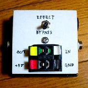
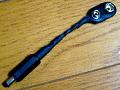

回路実験機 その1
2007年11月16日 カテゴリー：自作エフェクター（アナログ）

エフェクターの基板、もしくはブレッドボードで組んだ回路を実験的に音を出すためのものです。いきなり基板をケースに組み込む前にまずはこれで確認します。いくつもエフェクターを作る人は持っていたほうが後々楽です。またも100円ショップの箱に入れてます。電池のスペースがないのでDCジャック専用です。電池を使うときは↓のようなものを使います。

これはライブ前などで「電池が切れたけどドライバーがない」とか、とりあえずその場しのぎで電池をつけたいときに役に立ちます。